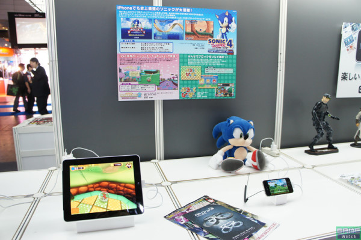
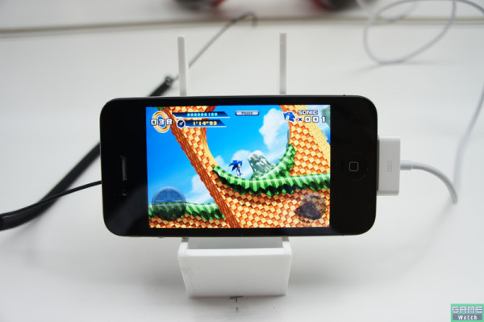

附件: 12.jpg
Apple公司在東京電玩展也有設展區，雖然場地不大，各廠商推出的iPhone、iPad高品質遊戲卻相當引人矚目。SEGA的招牌藍色音速Sonic the Hedgehog 4 episode 1、滾出名的猴子球Super Monkeyball等作品也不缺席，不過前者似乎未展出iPad版本。

附件: 13.jpg
圖片來源：
game.watch
如果Sonic 4有支援到Retina的解析度，那麼iPad放大2x應該沒問題
不然就像其他APP一樣全機種相容支援
展場用iPhone 4...玩起來應該很爽[:baozi6:]